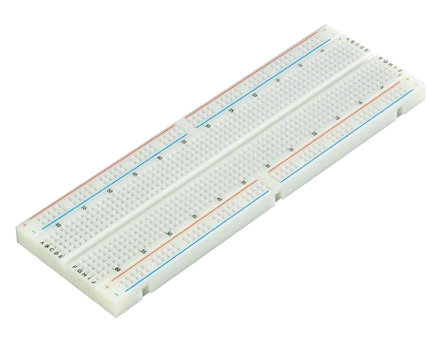
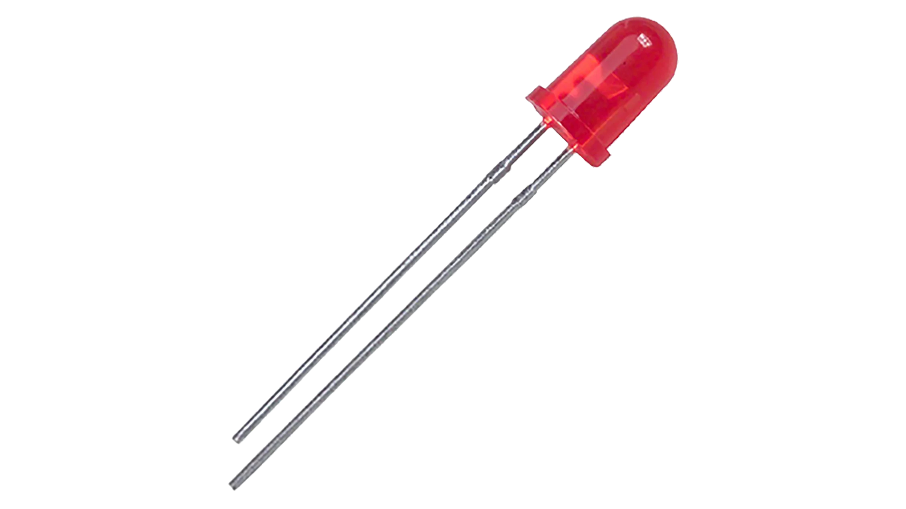

Dimostrazione pratica del duty cycle
Cenni Teorici
-
Generatore di Funzione
Produce segnali di diverse forme d'onda per testare i circuiti.
-
Oscilloscopio
Visualizza i segnali elettrici nel tempo, utile per analizzare ampiezza e frequenza.
-
Cavi Coassiali
Trasportano segnali riducendo le interferenze esterne.
-
Breadboard
Piastra per montare circuiti temporanei senza saldature.
-
Jumper
Fili per collegare componenti su breadboard e modificare i circuiti facilmente.
-
LED
Diodo che emette luce, usato come indicatore nei circuiti.
Funzioni ad onde: rettangolari, quadre e impulsive.
Le funzioni ad onde rettangolari sono associati a segnali di tipo periodico cioè che si ripetono dopo un certo lasso di tempo chiamato periodo (T).
Queste onde si distinguono in rettangolari, quadre ed impulsive. La differenza di quest’ultima con le altre due è la presenza del duty cycle, esprimibile in valore o in percentuale e rappresenta il rapporto tra Ton/T, il periodo di tempo in cui il segnale è a stato alto fratto il periodo stesso.
Nelle onde quadre Ton = Toff, questo vuol dire che T=2Ton e, quando calcoliamo il duty cycle, Ton/T sarà sempre 0,5 o 50%.
Nelle onde rettangolari, il Ton deve essere diverso da Toff quindi minore o maggiore quindi il duty cycle sarà sempre minore o maggiore del 50%.
In quella impulsiva il duty cycle è minore del 10% e quindi Ton < 10% T.
Obiettivo
Verificare visivamente l'andamento dell'onda quadra al variare del duty cycle, direzionalità, frequenza e ampiezza.
Strumenti Utilizzati
-
Generatore di Funzione
.jpeg)
-
Oscilloscopio

-
Cavi Coassiali

-
Breadboard

-
Cavi Jumper

-
2 LED

Esecuzione
Accendiamo il generatore di funzione e l’oscilloscopio e li colleghiamo tra di loro tramite cavi coassiali. In seguito prendiamo la breadboard su cui mettiamo 2 LED collegati da cavi jumper al - e al + della breadboard in modo tale che abbiano polarità invertita. Poi colleghiamo il generatore di funzione al + e - sulla breadboard in modo da visualizzare il segnale tramite i LED.
Dopo aver collegato tutto possiamo indurre una corrente alternata sui LED tramite il generatore di funzione. Quindi, possiamo cominciare a vedere il segnale tramite l’oscilloscopio e i LED. Proviamo poi a cambiare certi parametri come il duty cycle, la direzionalità, la frequenza e l’ampiezza dell’onda.
In questo video si vede il comportamento dell'onda con il cambio della frequenza che, in questo caso viene abbassata fino ad 1Hz. Avendo posto i led con polarità opposta tra di loro vediamo che: quando il segnale logico è alto un led si spegne e l'altro si accende e la stessa cosa succede quando abbiamo un stato logico basso.
Conclusioni
Siamo quindi riusciti nel nostro intento di visualizzare il cambiamento di vari parametri della funzione. L'unico problema che abbiamo incontrato è stato il rumore visualizzato sull'Oscilloscopio che può essere minimizzato mettendo meglio il cavo ma resterà sempre, anche se in minima parte.